| プロメテウスの罠〔１５〕 除染の悩み「今、そこにある放射能！」 (朝日新聞デジタルＳＥＬＥＣＴ) | |
| 朝日新聞 | |
| (2013) | |
環境省は東京の大手広告会社に、伊達市など福島県の各自治体が担当する放射性物質の除染に関する関連業務を約１５億円で委託した。広告会社は業務を大手人材派遣会社に委託。そこの契約社員１４人が「除染」と「住民」の間に立つも、除染の知識はなかった。役所の担当職員も鋭意働くが、１００％除染は不可能。国と東京電力が起こした原発事故で美しい環境を汚染され、除染を自力で行う理不尽さ。廃棄物も溜まるばかりだ。悪夢のような現実の中で生きる住民らの姿を丁寧に追う。
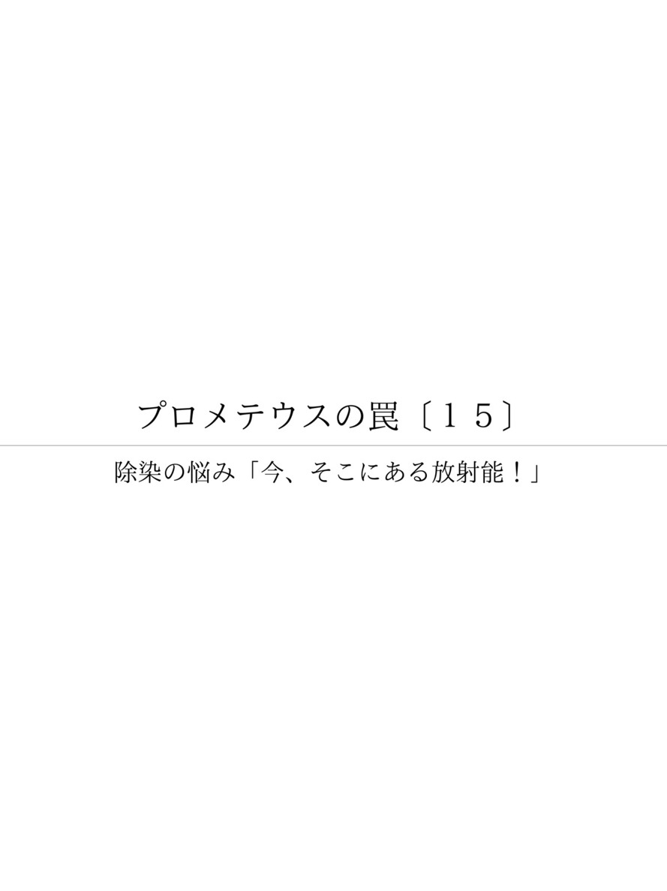
内容紹介
環境省は東京の大手広告会社に、伊達市など福島県の各自治体が担当する放射性物質の除染に関する関連業務を約１５億円で委託した。広告会社は業務を大手人材派遣会社に委託。そこの契約社員１４人が「除染」と「住民」の間に立つも、除染の知識はなかった。役所の担当職員も鋭意働くが、１００％除染は不可能。国と東京電力が起こした原発事故で美しい環境を汚染され、除染を自力で行う理不尽さ。廃棄物も溜まるばかりだ。悪夢のような現実の中で生きる住民らの姿を丁寧に追う。
初出
朝日新聞 二〇一二年七月二十八日～八月十五日
第１章 野放しのライオン
第２章 まるでサンドバッグ
第３章 炎天下、地面と格闘
第４章 国へ容赦なく注文
第５章 説明会に観音さま
第６章 みんなが頭を下げた
第７章 怒りと疑問噴出
第８章 マンガ付きで説明
第９章 家の中を下げるため
第１０章 家が緑色になった
第１１章 環境省ではないです
第１２章 同じこと聞かれたよ
第１３章 スーツで来ないで
第１４章 家壊してでも作業を
第１５章 考えるより試して
第１６章 土ごとポリマー加工
第１７章 汚泥処理に一筋の光
第１８章 保管場所こそ問題
第１９章 今、そこにある放射能
福島県伊達市。第一原発から北西約６０キロの距離にある。市職員の半沢隆宏（はんざわたかひろ）（５４）は２０１１年夏、市でただ１人の専従除染担当だった。
除染は、国が直接担当する区域と、伊達市など各自治体が担当する区域がある。
半沢は当初、除染の意味を住民に理解させるのにてこずった。家の敷地内の放射能を取り除き、地区ごとの仮置き場に持っていく。それをわかってくれないのだ。
そうだ、これはどうだろう。思いついたのが「菓子箱模型」だ。
自宅で模型の家をつくった。
出張帰りに買った菓子箱をばらして組み立て、家をつくる。
ベニヤ板を４０センチ四方に切った。それが「庭」だ。菓子箱の家をベニヤ板の庭に置いてみる。
その上に、１００円ショップで買ったビーズ玉をばらまく。これ、放射性物質のつもり。
次は、ポリエチレンシートを筒形にして汚染土用のバッグをつくる。
１１年８月のお盆過ぎ、説明会を開いた。住民約２０人が集まった。
――みんな、これ見て。
原発で爆発事故が起きて、土の上に放射性物質が落ちたんです。
それを取って、汚染土用のバッグに詰めてよそに持って行くんです。こんな具合に。
ほら、放射能がなくなったでしょ。バッグはいっぱいになるけど、ほとんどは土だ――。
見つめる人たちが、うんうん、とうなずく。
ベニヤの庭には蔵で見つけた１５センチ四方の茶色い布を置いた。そこにビーズを貼り付けた。セシウムが土にくっついている状態である。
さらに、友人にもらったライオンとトラのフィギュアを登場させた。
――このライオンやトラを放射性物質だと思って下さい。今は庭に野放しになっている。怖いよねえ。
でも、こうやって捕まえて、離れたところにつくった檻（おり）に入れる。これが除染です。仮置き場つくって持ってった方が安全だぞい、ということなんです――。
うんうん、が大きくなった。
参加者から次々に要望が出る。
「裏の木さ、全部切ってもらいてえ」「線量ゼロにしてほしい」
半沢はほっとした。やっと除染を前提に話ができるようになった。ここまでが大変だった。
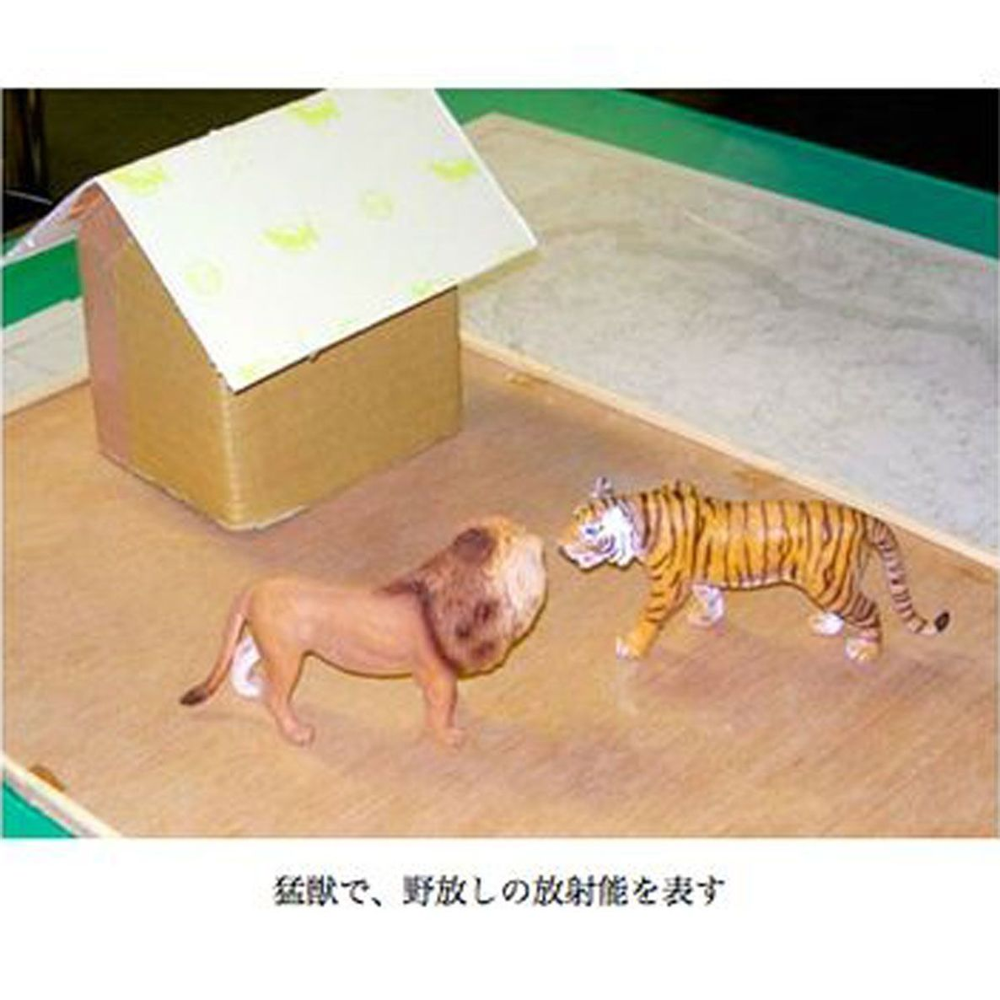
除染の説明用に菓子箱の家をつくった伊達市職員、半沢隆宏は、１１年７月１日に市の除染担当に任命された。そして各家庭の除染の段階で壁にぶつかった。
市内で開いた説明会の１回目は、１１年７月２１日だった。以後、説明会を１００回以上も開いた。しかし、住民の反発は強かった。
「事故起こされてこんな目に遭わされて、何で市と自分たちで除染しなきゃなんねえんだ」
「そんな危ねえことできねえ。東電や国がやれ」
「放射能は東電へ持ってけ」
市内に町内会は４２２。５回開いた会長対象の説明会に、４０～８０人ずつが集まった。どの会場でも、放射能汚染への憤りや怒りが爆発した。
当時、除染の専属担当は半沢ひとり。時にはダブルヘッダーで公民館を回り、住民の怒りにさらされた。
「みんなから責められて、サンドバッグ状態でした」
８０キロあった体重が、３カ月で７２キロに減った。
専門書を読み、実際に除染を体験し、自分なりに勉強し、説明した。
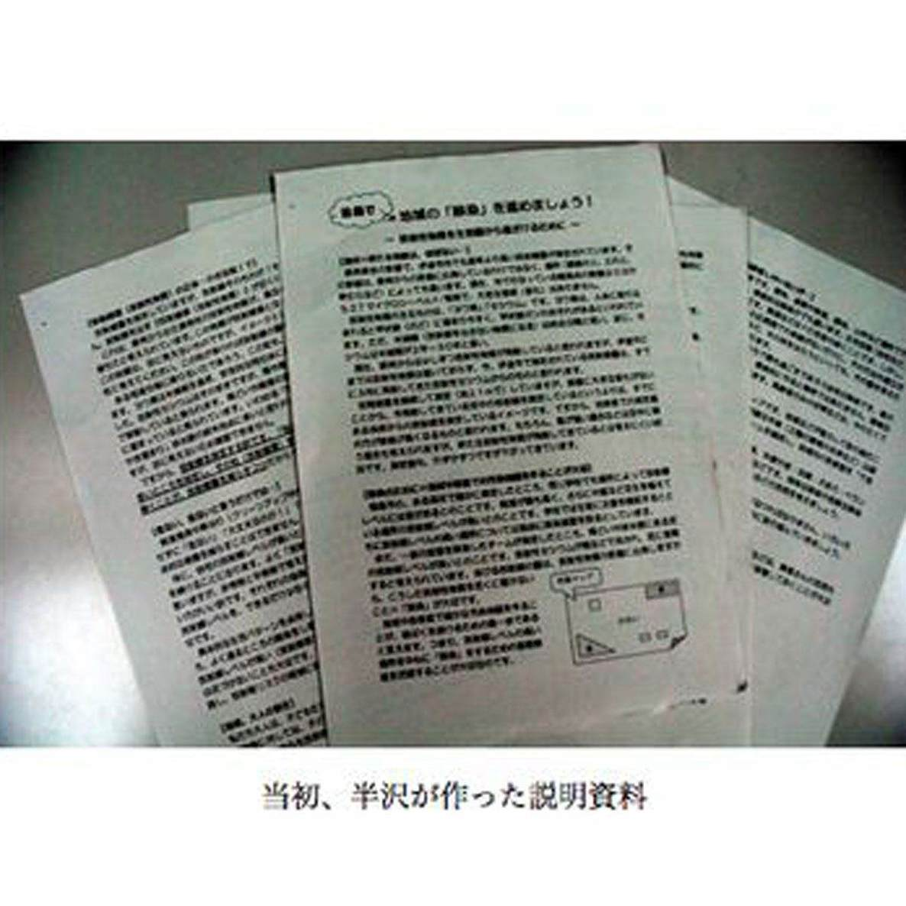
自宅周辺の放射線量が下がるのはみんなにとっていいことのはずだ。放射性物質を自宅から遠ざけることに、なぜ反対なのか。
危ねえからいやだ。
でも、放射性物質が家の周りにあるままの方が危ないよ。
それはそうだが、でもいやだ。
押し問答が続いた。
「道理を説けば分かってもらえると思ったんですが」
反対の気持ちを考えてみた。
見えない放射性物質が、いきなり汚染土のバッグの山になって現れる。それが怖いのかもしれない。
土ごとはぎ取るのだから、バッグの中はほとんどが土だ。しかし住民は、バッグが放射性物質でいっぱいになっている気がするようだ。
バッグが１００個あれば放射線量が１００倍になるのではないか。
１０回２０回と説明会を開くうちに、不安な部分が見えてきた。
それなら、はじめから目に見える形で放射能や除染を説明するのがいいのではないか。
まず、家の周りに放射性物質がばらまかれている今の状態。それを集めて仮置き場に持って行く。集めたものを管理する。
それを説明する方法が「菓子箱の家」だった。手づくり感いっぱい。だけど、分かってもらえるように、と必死だった。
伊達市は県内でも早く、１１年５月に、仁志田昇司（にしだしょうじ）市長が市内全域の除染を決めた。
１１年６月末には放射能対策チームの発足を決め、７月１日に市民生活部で地域振興に取り組んでいた半沢隆宏が除染の専属担当に任命された。
辞令が出ると同時に、上司からいわれた。
「それで、３日から富成小学校で除染することになってるから」
え？ ３日って明後日のこと？
伊達市は第一原発から６０キロメートル離れている。放射能への意識がもともと低かった。だが、測定が進むにつれ、放射線量が年間２０ミリシーベルト以上になるホットスポットがあることが分かってきた。
そうした地点ごとにピンポイントで避難区域にする「特定避難勧奨地点」が指定されていった。
だが、市では福島第一原発から２０キロ圏内にかかる南相馬市などからの避難者千数百人を受け入れていた。市職員の多くが避難者の世話に追われていた。対策チームといっても、メンバーのほとんどが兼務で、専属担当は半沢だけだった。
チームにはアドバイザーがついた。放射線の専門家、田中俊一（６７）だ。田中は、１２年７月、国が新たにつくる原子力規制委員会の委員長の候補に名が上がった。
田中は２００７～０９年、原子力委員会の委員長代理を務め、事故後「御用学者」と呼ばれたこともある。１１年３月末には、学識者１６人で緊急提言を発表。「原子力の平和利用を先頭だって進めて来た者として......陳謝いたします」と述べた。
田中は自主的に計画的避難区域だった飯舘村長泥（ながどろ）地区に入り、１１年５月１９日には除染を始めていた。田中は福島出身。伊達では小学２年生から中学１年生まで過ごした。
長泥での除染活動をテレビで見た仁志田市長は、すぐに田中と連絡を取った。伊達市での除染について、まず学校をきれいにしようと準備を始めていた。
１１年７月３日、富成小学校での除染が始まった。半沢は、田中の指示で校庭周辺の土を集める。側溝にたまった泥をかき出す。雑草を刈る。
気温は３５～３６度になった。凍らせた１リットルのペットボトルを１日に３本４本と飲んだが、すべて汗で流れ、小便も出ないほどだった。
作業中、田中の姿が見えなくなった。半沢が捜すと、田中は作業員にまじり、スコップを手に土はがしをしていた。
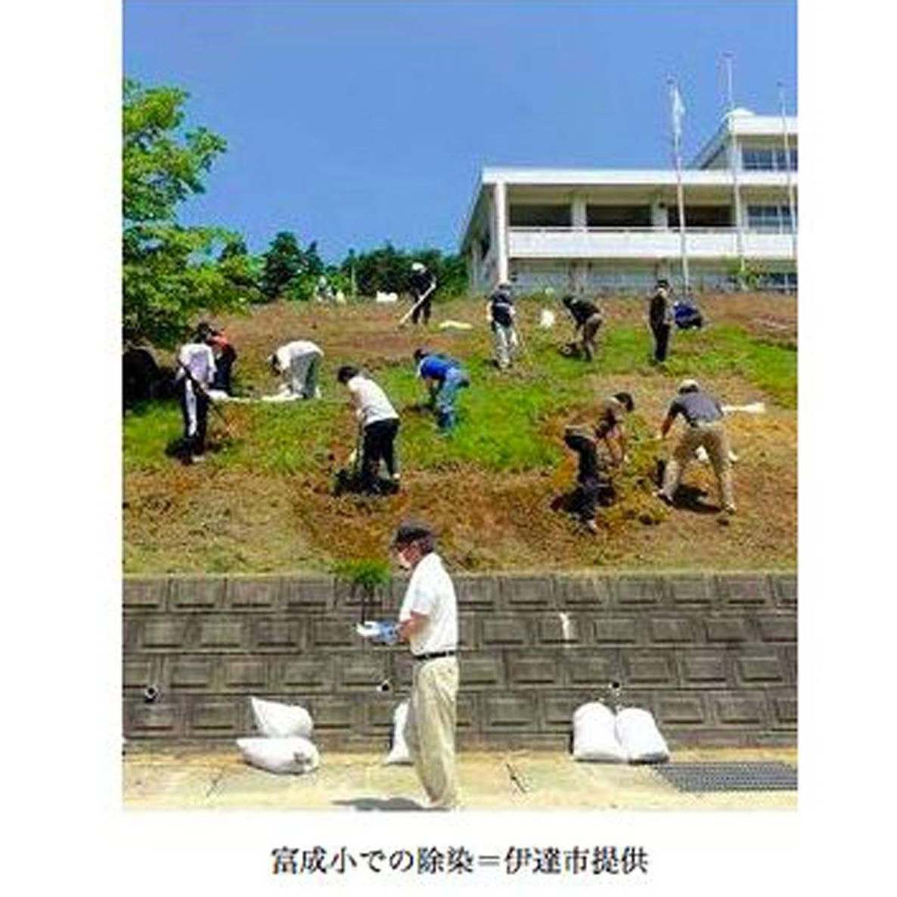
１１年８月１０日、福島市のグリーンパレス・ホテル。
原発事故で汚染された廃棄物の処理や除染について定める特別措置法案の説明会が開かれた。環境省の担当者と、関係市町村の職員ら、約１００人があつまった。
そこで、はっきりと国に注文をつける男がいた。伊達市の除染担当、半沢隆宏だった。
「年間５ミリシーベルト以下の地域は財政措置しないというが、していただかないと困ります」
「除染をやった経験からいうと、廃棄物はかなりの量が出る。その保管をどう考えているのですか」
「国は市町村を支援するといったけれど、支援はおかしい。責任を持ってやってもらわないと」
２週間後に開かれた再度の説明会では、半沢の質問にあった「土壌等の仮置き・保管について」という内容が加わっていた。
半沢は１１年７月１日に市の除染担当に任命されたばかりだ。しかし１カ月余の経験で、除染の大変さが身にしみていた。
「国は、実際にどれほど土が出るかも分かってなかったんじゃないかなあ」
富成小学校の除染をやってみると、はぎ取った表土、刈り取った草、コンクリートの削りくず、廃棄物が大量に出た。
小学校に続いて、民家を除染した。
民家１軒分で、１メートル×１メートル×１メートルの汚染土用のバッグが、３０個も出た。
「３軒で７０トンか......」
半沢は、伊達市の町内会で１００回以上、除染の説明会を重ねてきた。
初めのころ、住民の反応は反対ばかりだった。それがいまでは、仮置き場をどこに確保するかが主要な議題になってきている。
そこまで話し込んできたという自信が、半沢の国に対する厳しさの裏付けになっていた。
国や県内の除染関係者が集まる会合で、空き箱の模型を使って説明した話を披露した。
「版権は主張しませんから、皆さん、ぜひ使ってください」
１２年６月、環境省が除染をＰＲするためのＤＶＤをつくった。長さは４分。それに、半沢がつくったのとそっくりな模型が登場した。
しかし、材料は菓子箱ではない。環境省は電通に委託してつくってもらったという。
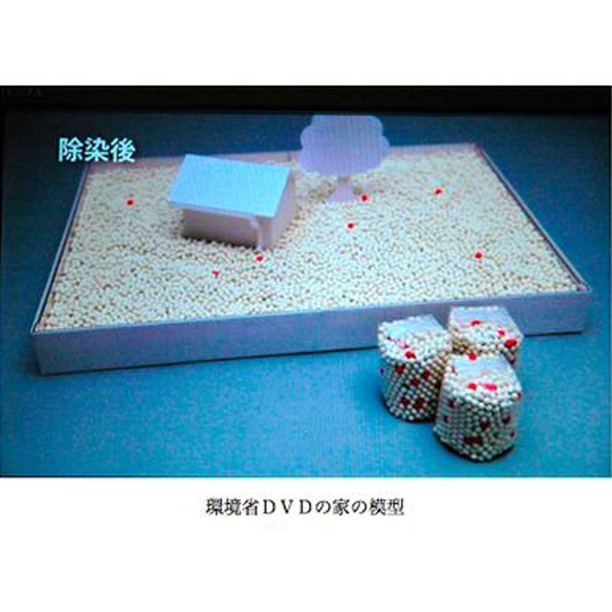
伊達市の除染説明会は今、町内会ごとに開いている。大人数では話が散漫になり、なかなかまとまらないためだ。
市として説明会を企画するだけでなく、町内会長に呼ばれて説明に出かけることも増えた。
１２年７月１０日、富成５区の説明会を午後１時半から区の集会所で開くから来てほしい、と連絡があった。山あいの２５世帯の小集落だ。
除染担当職員の半沢隆宏と、富成地区担当職員の菅野公宏（すげのきみひろ）（３８）、高橋剛樹（たかはしこうき）（３８）の３人が車で出かけた。
前を行く女性が、自転車を小さな石段の下に止めて、歩いて上っていく。ついていくと観音堂。そこが５区の集会所だった。
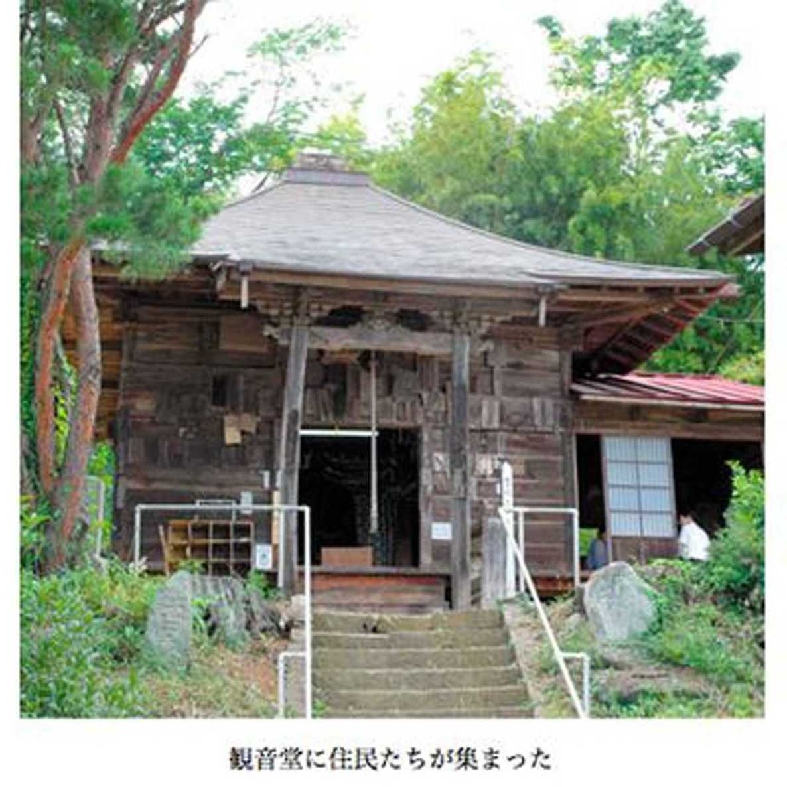
お堂の中は２０畳ほどの広さで、隅には流しもある。座布団が敷かれていた。
住民が次々やってくる。まずは観音さまに手を合わせる。「おさい銭、忘れてきた」という声も聞こえる。観音さまに見守られながら、説明会は始まった。
いつものように、半沢が説明のトップバッターだ。持参した遮水シートの切れ端を回して、丈夫さを確かめてもらう。仮置き場で汚染土用バッグの下に敷いたり、覆ったりするシートだ。
続いて菅野が、除染の手順や、他地区の状況を説明する。
町内会ごとに自分たちの分の仮置き場を探すことは理解されてきている。５区でも、９日前の日曜のクリーンアップ作戦のとき、仮置き場が話題になった。
「水源地付近は外した方がいい」などという意見は出たが、具体的な候補地はまとまらなかった。
町内会長の菅野豊一（かんのとよいち）が、半沢らの説明を受け、切り出した。
「菅野益芳（かんのますよし）さんから土地を提供してもいいというお話があります」
益芳が立った。
「生活の場所を安全にした方がいい。みんなのためになるなら、うちの土地を提供しようと思います」
山の峠から３０メートルほど入った土地だ。山の中なので民家もない。
参会者から「そうしてもらえたらありがたい」という声が出る。
１時間足らずで、５区の説明会は終わった。
除染みたいな問題は、大勢集めて話をしたってだめだ。こまめに、足を使って対応していくしか解決の方法はない。半沢はそう信じている。
除染した汚染土の仮置き場をどこに設置するか。嫌われ設備だが、どこかにつくらなければならない。
福島県伊達市の富成地区は１８区まである。１２年６月２３日、第３区の区長宅に役員５人が集まり、除染担当職員の半沢隆宏を招いて説明会を開いた。
半沢「町内会ごとに仮置き場を探してもらいたいのです」
役員「市で探してもらえないか」
半沢「市からいったら絶対できません。行政から話を出すと必ず反対が出る。みんなで探すべ、という機運が高まって、ここでどうだべな、と軟着陸するのが一番いいんです」
役員「３区は平地が少ない。平地がある近隣区にお願いできないか」
半沢「どうしても場所がなければ何区か合同で探しますが、よその区の汚染までは引き受けたくないという気持ちがありますからねえ」
自分たちの分は自分たちで保管するのが一番だ。そういうと、５人の役員は「そうだな」とうなずいた。
１２年７月１０日は富成１区。１８世帯中、１６世帯が出席した。
市からは半沢のほか、地元につながりのある職員の菅野公宏、高橋剛樹が出席した。
平地の少ない１区は仮置き場を見つけるのが困難だと２人はみていた。そのため、１２年５月１８日に担当になってから、何十回と地区を歩き、地形の把握に努めていた。
説明会は、厳しく問いただす質問から始まった。ひととおり出尽くしたあと、町内会長の西戸昌幸（にしどまさゆき）（６４）が「で、１区の仮置き場はどう進めっかない」といった。
高橋が覚悟を決めて切り出す。「２トントラックで運び込みたいのですが、斜面では難しい。１区は急斜面が多いですが、１カ所だけ、田代沼の上に開けた土地がありました」
「おらの土地だ」とびっくりした声。西戸信夫（にしどのぶお）（６６）だった。
もともとは田んぼだが、山が荒れてイノシシやハクビシンの被害が大きくなったため、ここ３年は耕作をやめているという。
信夫はしばらく考えたあと、口を開いた。
「誰かが、犠牲にならないとだめだしなあ。あの土地がちょうどいいというのなら」
みんなが「お願いします」と頭を下げた。
高橋も菅野も、今日ここまで話が進むとは思っていなかった。ほっとして外に出ると、闇の中にホタルが飛んでいた。
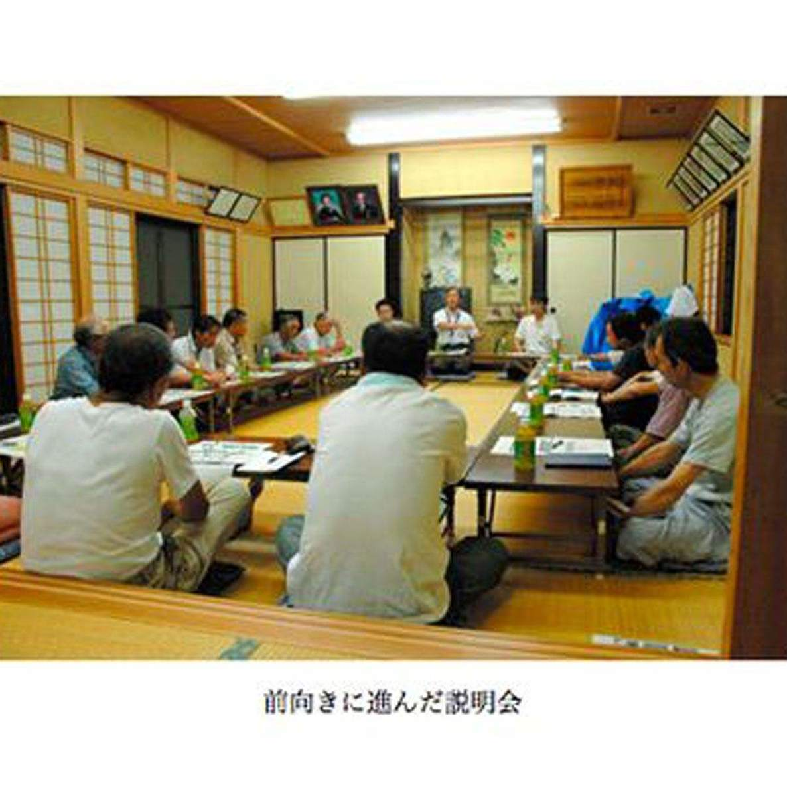
自力除染に反発していた伊達市の高線量地域の住民たちも「やらないと仕方なかろう」に変わってきた。
町内会ごとに見つけてもらっている仮置き場は１２年７月２４日現在、５４５戸分の契約がすんだ。他にも候補地はあがってきている。
除染担当の半沢隆宏はいう。
「国や東電への怒りは当然だと思います。それをまずはき出してもらって、そこから話が始まる」
国の責任だといっても、国の対応を５年、１０年と待っているわけにはいかない。自分たちが住む場所を少しでも早く、少しでも安全な場所にしなければならない。
除染は、国が直接するところと市町村が主体で担当するところとがある。しかし、国が担当する地域で、話はほとんど進んでいなかった。
たとえば南相馬市。
２万４千の世帯のうち、原発から２０キロ圏の小高区約４千世帯が警戒区域とされた。それが１２年４月１６日、ほとんどが避難指示解除準備区域に見直された。
市が小高区で測っている地上１メートルの放射線量は、１２年７月３０日は、毎時０・１５～３・０７マイクロシーベルト。文部科学省の測定では伊達市よりおおむね低い。
区域見直しから２カ月後の１２年６月１６、１７日。除染説明会がそれぞれ１日２回ずつ開かれた。
３００席のホールに補助椅子２００を追加したが、通路に座る人や立ったままの人であふれかえった。
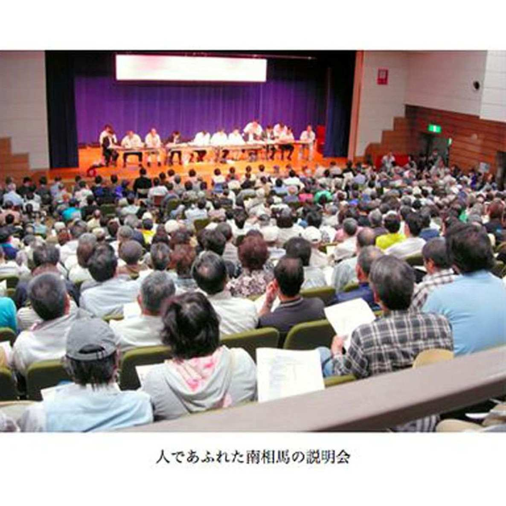
内閣府、資源エネルギー庁、環境省から担当者が出席。除染の進め方について説明するはずだった。
だが、仮置き場、その後の中間貯蔵施設の場所が決まっていない。３年程度保管して、その後、移すといった説明が並ぶだけだ。
「保管場所がないのにどうやって除染するのか」という質問が飛ぶ。
国は、放射線量の調査をした後、住宅などの除染を１２年９月から始めたいと答えた。これにも「警戒区域を解除したあとでなぜ測定するのか」と反発が出た。
「原発からまだ放射能が出ているんじゃないか」「建物の補償はどうなってる」――。除染以外の質問が相次ぎ、議論は拡散するばかりだ。
環境省の福島環境再生事務所長、大村卓（おおむらたかし）が「セシウムを全て除くことはできません」というと、「じゃ、除染なんていうなよ。被曝（ひばく）の低減、じゃないか」。
それから１カ月半、南相馬で説明会は開かれていない。
伊達市では、除染担当の半沢隆宏らががんばって、独自の除染作戦を展開した。他ではどうか。
原発から６０キロほどの郡山市でも２０１１年、ホットスポットが見つかった。
市は１１年４月、他地区にさきがけて小中学校のグラウンドの除染を実施した。しかしそこから停滞した。
市内には、毎時３マイクロシーベルトに達したところもあった。市は１１年夏、町内会やＰＴＡに、通学路や公園の除染をしてもらうことにした。
この除染は国の補助金を使う。町内会１００世帯あたり５０万円。
建物管理の会社で働く吉田美津子（よしだみつこ）（４３）は、７８世帯のマンション一棟でつくる町内会の会長だ。
１１年１０月、市が開いた説明会に出席すると、冊子を二つ渡された。除染のマニュアルだ。作業中の服装や班編成から汚染土の管理の方法などが書かれている。合わせて約３０ページ。
吉田は徹夜してマニュアルを懸命に読み込んだ。こんなややこしいこと、町内会で話しても分かってもらえない。
わかりやすく、マンガ入りの１ページにまとめ、マンション内に配った。
吉田の町内会がもらえる補助金は４５万円だった。うち１０万円で、放射能測定器を１台買った。
作業用手袋、マスク、ハンディー掃除機、ほうき、ちりとり。それを保管するためのロッカー。
マニュアルには、高圧水洗浄機で路上や排水溝を洗う方法も書かれていた。しかしマンションには機械の置き場所がない。しかたなく、ビル清掃会社に作業員３人を派遣してもらい、それに５万円払った。
作業が終わると、補助金の申請書を書かなければならない。
購入した物品、参加人数、除染地区の地図、各地点ごとに地上１センチ、５０センチ、１メートルの高さで測定した放射線量......。
しかし、これに自宅の除染は含まれていない。
吉田は１１年４月、自宅の放射線を測った。玄関や換気扇の周辺が高く毎時０・３マイクロシーベルトあった。
室内の壁を粘着テープのワイパーでこすり、靴底を拭いた。知り合いのお母さんたちも必死だった。
ある日、マンションの管理人に屋上に呼ばれた。「排水溝付近が２０マイクロもあるんです」
驚いてホースで水をかけ、ブラシでこすって流した。５マイクロに下がった。
もっと早く除染していれば。吉田はくやしかった。
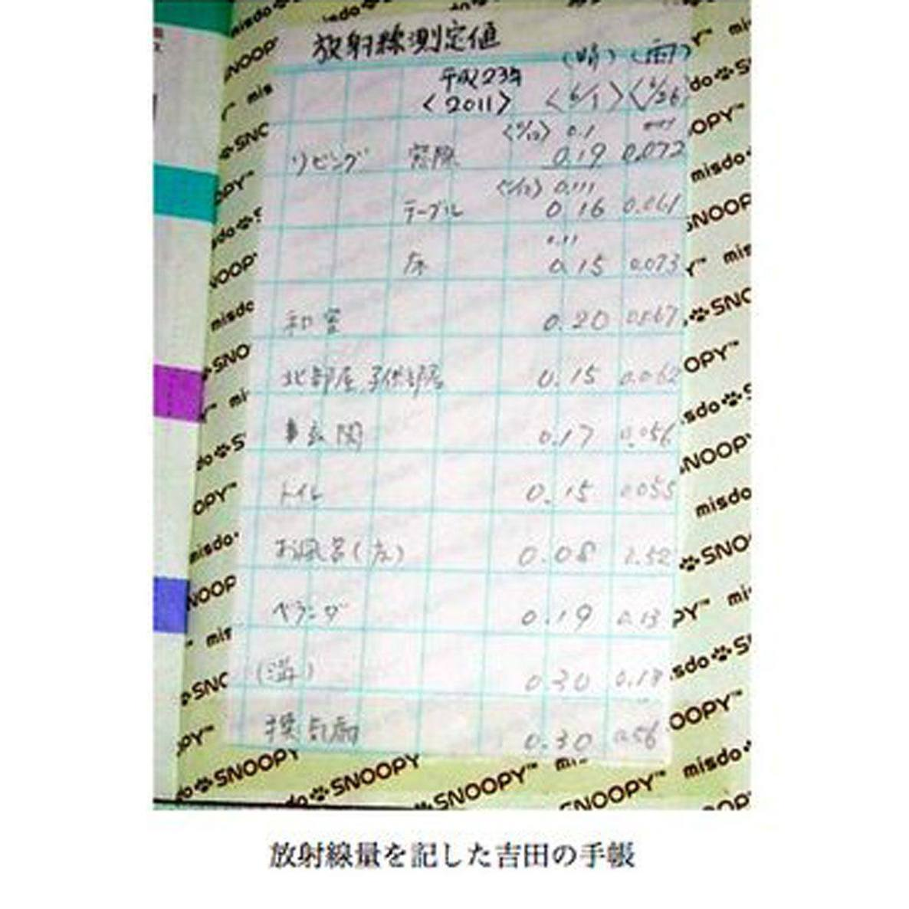
国の除染ガイドラインには、高圧水洗浄機で洗うと書かれている。しかし今、伊達市では基本的に高圧水洗浄はしない。意味がないからだ。
２０１１年以降、家屋は強い夕立、台風、雪にさらされた。福島県の年間降水量は平均１５００ミリある。水で取れる放射性物質はもうあらかた流れてしまっている。
除染の結果を確かめる国の実験でも、高圧水洗浄が必ずしも効果があるといえないことが分かった。しかし、そういうことはガイドラインには反映されていない。ガイドラインに基づいて県が実施している除染作業従事者への講習会でも、いまだに高圧水洗浄が紹介されている。
現実に、伊達市では除染はどう行われているのだろう。
小国地区の木造平屋の古い農家。敷地が１３００平方メートルある。そこに８人の作業員が入った。
敷地の見取り図の数カ所に、まず地上１センチ、５０センチ、１メートルの高さで測定した線量を書き込む。
雨どいの下の地面が高かった。１メートルの高さで毎時４・５マイクロシーベルト。深さ１０センチほどをスコップで削り取る。０・７マイクロになった。
雨どいのトタンのさびた部分も高い。さびをブラシでこすり取る。
土蔵の基礎のコンクリート。３・８マイクロある。表面を研磨機で削る。１・７７マイクロに下がった。
家の横はすぐ土手になっている。その雑草を刈り土を削る。これは手作業。庭の土は重機ではぎ取った。
敷地から２０メートルまでの山林も、国の除染の対象になる。伐採を望む住民も多いが、伊達市は切らない。今はセシウムがはがれないのが問題で、落ちてくることは少ないからだ。
長時間過ごす家の中の線量を下げることが目的。線量が下がらなければ周囲の森林の枝打ちや下草刈りなど、家の環境に応じた作業をする。
軒下には様々なものが置かれている。自転車、農機具、壊れた電化製品......。こうしたものを片付けてもらいながら作業を進める。
２週間ほどかけて除染作業が終わると、１立方メートル入る汚染土用のバッグ４５個分の廃棄物が出た。そして、毎時０・８マイクロシーベルトあった家の中が、おおむね０・５マイクロ以下まで下がった。
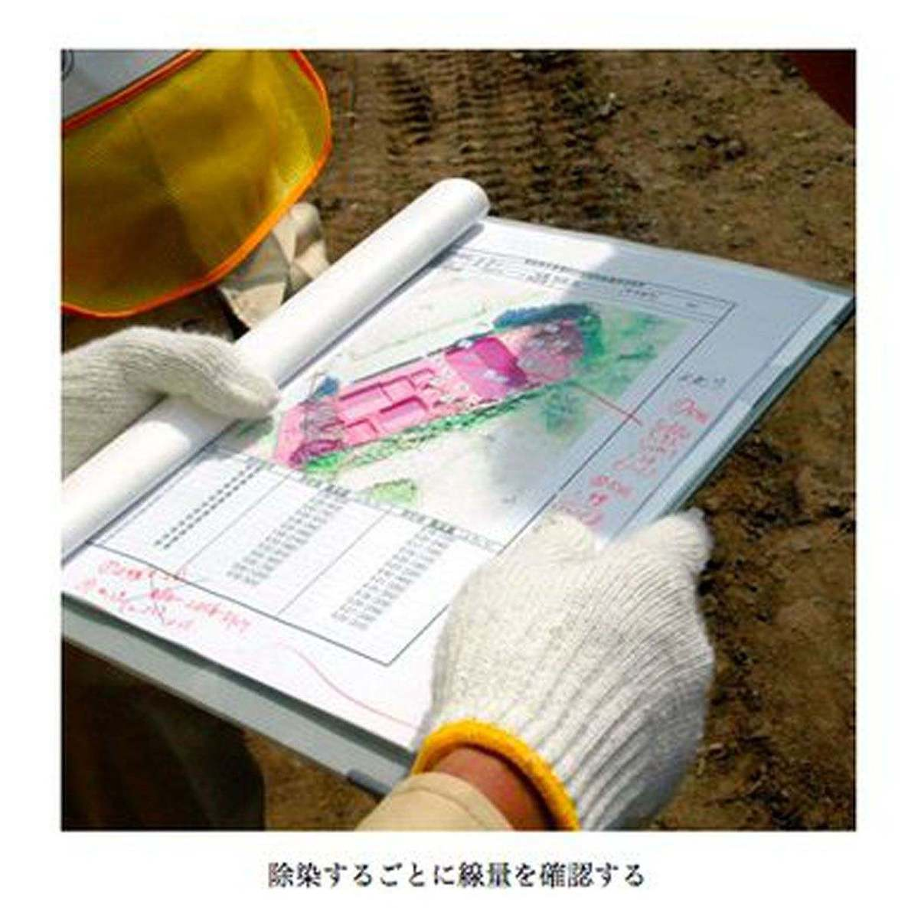
さすが、昔の農家は広い。作業が大変だ。そう思っていると、作業員たちの会話が聞こえてきた。
「この上のお宅は６千平方メートルあるんだよね。おまけに、道が狭くて重機が入らない......」
除染用の新兵器がある。ガンマカメラ。
手持ちのビデオカメラのような形をしていて、パソコンのモニタースクリーンにつながっている。伊達市はそれを、メーカーの東芝から借りて使った。
家に向けると、モニター画面に線量の分布が色で出てくる。線量が高いと赤、低いと青。それが２５６色で示される。
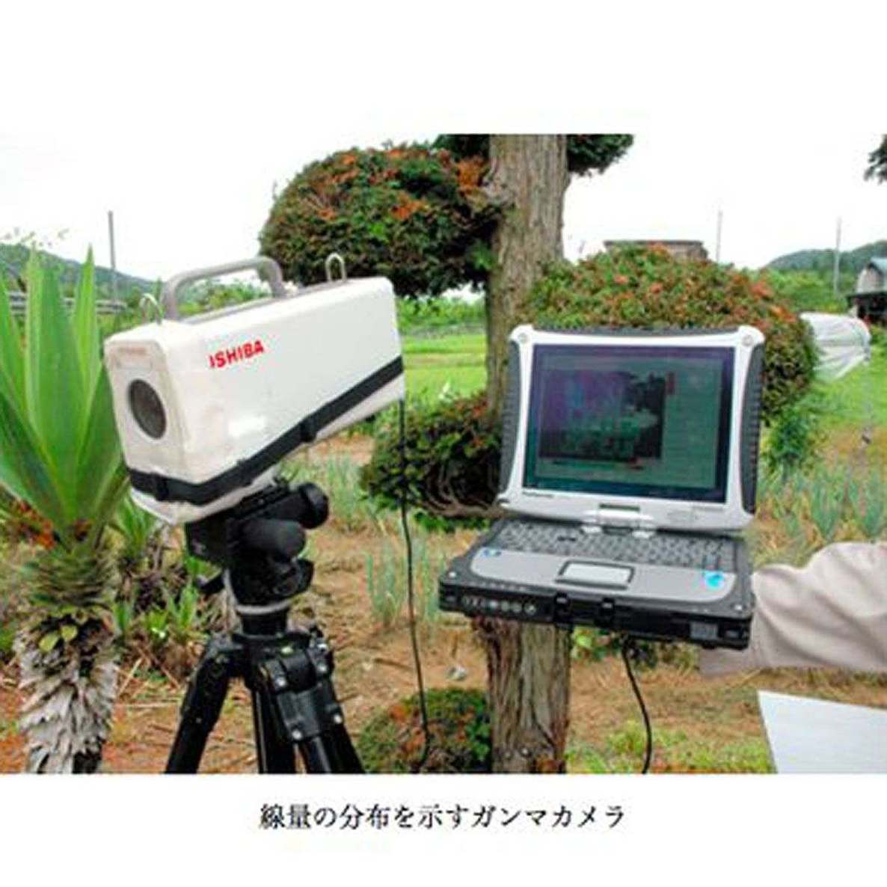
１２年３月、除染前の家を映した。赤系の色ばかりだった。７月２０日、除染が済んだ。家は緑色になった。
「放射能が見えるんだね」
「ほお、取れたなあ」
住民から感嘆の声が上がる。
伊達市では、除染目標を２段階に設定している。
まずは、空間線量を毎時１マイクロシーベルト以下に。年間で外部被曝（ひばく）線量が５ミリ以下になる計算だ。そして最終的には毎時０・２３マイクロ以下、年間で１ミリ以下を目指す。
市は１１年８月、子どもたちに「ガラスバッジ」を配った。チューインガムの箱ぐらいの大きさの積算計で、常時身につけて外部被曝線量を知ることができる。
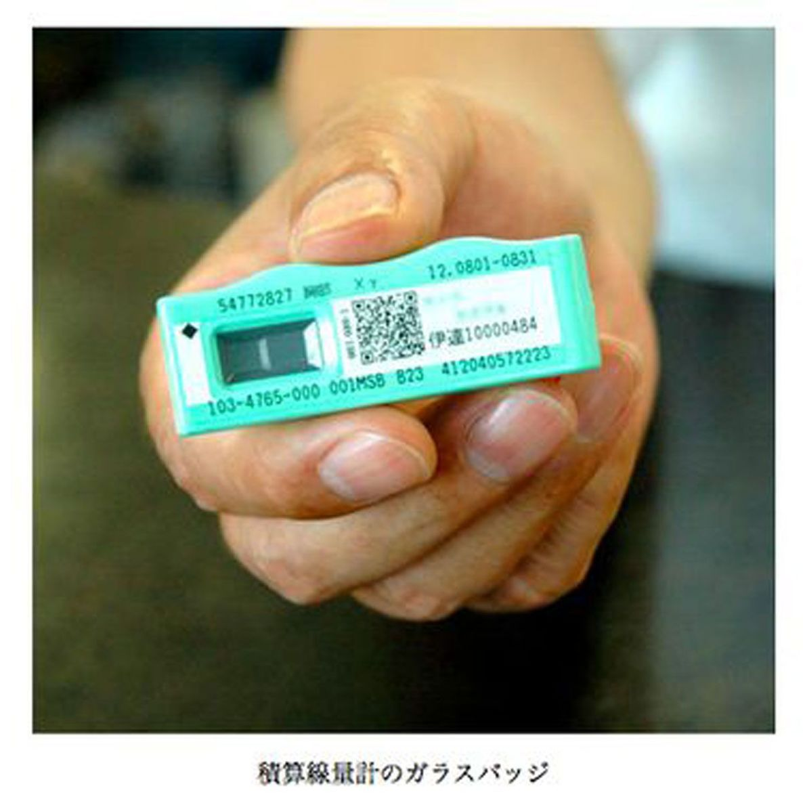
伊達市の除染担当、半沢隆宏は説明会で繰り返す。
「玄関わきの線量が高くても、そこを通る時間は１日数秒だよね。高い場所は気になってしまうけれど、大事なのは一人のトータルの線量を減らすことです」
住民に、実際に目で見て納得してもらう。これが伊達市の基本。仮置き場も積極的に見せる。町内会ごとに、見学会に出かける。
高さ３メートル弱に積み上がり、２０×６メートルにわたって黒い遮水シートで覆った汚染土用バッグの山の前に立つ。住民は「なんだかおっかねえ気がしちまうな」。
遮水シートに線量計を近づけると、高いところで１６マイクロあった。だが、１メートル離れただけで３・７マイクロに。３メートルの地点では１・２マイクロだ。
「ちょっと離れただけで、大丈夫なんだね。安心したよ」
この仮置き場は２千平方メートル。積まれていた２０×６×３メートルの汚染土用バッグの山は、１６軒を除染した分。あと４０軒分が運び込まれる予定だ。
除染には、とにかく広い仮置き場が必要だ。それが誰にもわかる。
ガンマカメラは１台１２００万円する。除染を進める上でぜひほしい。１２年４月、購入を国の福島環境再生事務所に申し入れた。しかしまだ回答がない。
１２年７月１１日、伊達市の除染アドバイザーを務めている田中俊一は、除染担当の市職員、梅津善幸（うめつよしゆき）（４９）とともに除染の現場を回った。
田中は、原子力規制委員会の初代委員長候補になっている。原子力委員会の委員長代理などを歴任した放射能の専門家だ。
市内の小国地区。１軒の民家を、委託の建設業者が除染している。
「このコンクリート部分はどう作業しましたか」
「放射線量はどのくらい下がりましたか」
作業員たちに話を聞きながら家の周りを見てまわる。
田中の視察には、「除染情報プラザ」のスタッフも立ち会っていた。
除染情報プラザというのは、環境省と福島県が合同でつくった組織。１２年１月、除染の広報や専門家派遣に伴うアドバイスを目的に誕生し、福島市に事務所を構えた。
田中はプラザのスタッフを横目で見ながら、「現場で初めて環境省の人に会った」とつぶやいた。
プラザの設置が検討されていたとき、田中は環境省・福島除染推進チーム長の森谷賢（もりやまさる）に、「現場ではさまざまなケースにぶつかる。そうした情報を集約しておき、相談に乗ることができるところにしてほしい」とアドバイスした。
「でも形ができただけで、まだそうなっていないんだ」
除染は、官庁発注の公共事業とは違う。住民が発注者だ。一人ひとりに納得してもらうように進めていかないといけないと考える。
田中は、現場にいたプラザのスタッフに「現場の様子をよく見て報告し、ケース・バイ・ケースで問題解決に当たって下さい」と励ました。
プラザが除染のデータバンクになり、市町村と国を結んでほしいと田中は期待するのだが......。
プラザのスタッフに環境省のどんな部局で仕事をしていたのか尋ねてみると、田中が驚くような答えが返ってきた。
「いいえ、私は環境省の人間ではないんです。パソナから派遣されて来ました」
パソナは、東京に本社を置く人材派遣会社の大手だ。
除染情報プラザのスタッフは１４人だ。環境省がその運営を電通に委託し、電通はさらにパソナに委託。パソナが１４人の契約社員すべてを出した。派遣会社の１４人が、除染の情報収集や専門家の紹介を担当していた。
１４人の職員全員が人材派遣会社パソナの契約社員だった「除染情報プラザ」。それで環境省は何をしようとしているのだろう。
パソナ福島事務所のプロジェクト長、石田寧（いしだやすし）（４９）はいう。
「市町村を訪問して、何でも聞いてきて下さい、というのが電通や、環境省の福島環境再生事務所との打ち合わせでの指示でした」
除染は誰もしたことがない。手探りだった。
「結局必要なかった情報もあったけれど、とにかく色々聞いてくるしかないと思って始めました。今から思うと、内容を絞って動いた方がよかったかもしれない」
プラザは１２年１月にスタートした。環境省の単年度契約の委託で、３月までは博報堂、４月からは電通が受注した。ともに大手広告会社だ。この業務の今年度の契約金は、約１５億円だった。
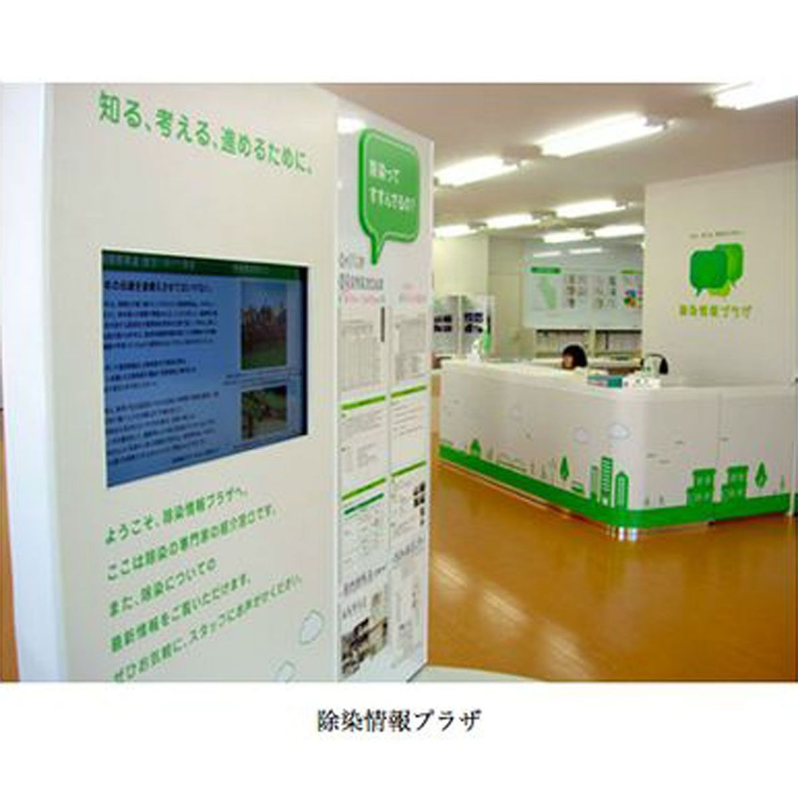
電通が受けた仕事は除染と汚染された災害廃棄物の処理についての広報。具体的には説明会の補助、市町村除染の情報収集、除染作業への専門家の派遣など。
このうち、情報収集と専門家派遣を担当するのが「プラザ」だ。そのスタッフを、電通はパソナに委託した。
初め、パソナは自治体に専門家を派遣する仕事のために５人と、コーディネーター１人を置いた。１２年５月下旬から市町村を回る外勤チームを作り、６人を増やした。７月からは外勤をさらに２人。これで１４人だ。
いずれもパソナの契約社員で、一般企業の事務や営業をしてきた人たちだ。ハローワークでも募った。放射能関係の経験を持つ人はいない。
担当する市町村は、国によって汚染状況重点調査地域に指定されている県内の４１市町村。これを８人で回る。訪問は月１度のペースだ。
石田によると、１２年６月にはこんなことがあった。
プラザのスタッフが自治体の除染担当者を訪問した。すると「環境省の支所の人が先週来て、同じことを聞いていったよ」。
「説明会をどうやって開いたらいいのか分からない」「仮置き場の探し方はどうするのか」などと相談もされるが、スタッフでは答えられない。再生事務所の担当者に答えてもらうことになる。伊達市の除染担当、梅津善幸はいう。
「除染方法を確認したいので判断できる人を、と頼んでもなかなか来てくれないんです」
「寄り合い所帯」なのは、福島県内で除染の監督を行う環境省の福島環境再生事務所も同じだ。
１２年１月に事務所が置かれ、４月からは２００人態勢で華々しくスタートを切った。
この内訳は、ざっと環境省から１５人、国土交通省、経済産業省、農林水産省、総務省から計４０人、省庁のＯＢ４５人、官民交流１０人、公募９０人。平均年齢は５５歳になる。
公募で入った人の中には建築会社で働いていた人や、ＮＰＯの職員だった人もいる。
環境省はもともと１２００人規模の省。いわば弱小省庁なので、寄り合い所帯にならざるを得ないのだ。
民間からの採用で、放射線取扱主任者の免状を持っている人や、放射線に関する施設での勤務経験のある人が少なくとも１１人いる。しかし省庁の現役やＯＢで、放射能を専門としてきた人はいない。
職員には放射能の知識がなく、除染は初めての仕事なので、１２年４月９～１１日、まず研修をした。
放射線の基本的知識。放射性物質汚染対処特措法について。除染計画について。
１２年５月にも３回に分けて、約２時間の研修。職員はいずれかの回に参加した。除染業務に関する厚生労働省のＤＶＤを見たあと、放射線取り扱いの資格を持つ職員が講師になり、測定器の使い方や防護服の着方を１時間かけて実習した。
１２年５月２１日には講演と見学会。このときは伊達市の除染担当、半沢隆宏が講師を務めた。
半沢はまず、「環境省の人はスーツで来るけど、現場には長靴と作業服で来て下さいね」と切り出した。
１２年１月着任の職員には「環境省」と書かれた作業服が配布されたが、４月に着任した職員の作業着はまだ届いていなかった。しかし半沢はこれまでにもたびたび「国の役人は現場にスーツで来る」と苦言を呈している。そのことを考え、１００人以上の聴講者の中には自前で作業服を調達してきた人もいた。
新米職員を前に、半沢は繰り返し訴えた。現場に足しげく通って実情を知ってほしいこと。自分の頭でその対応を考えてほしいこと。
講演後、バス２台に分乗して伊達市の除染現場や仮置き場を見学した。環境再生事務所の大村卓所長は「配布されていないので自分ので来たよ」と、自前の作業服、長靴姿で現れた。寄り合い所帯、ゼロからのスタートだった。
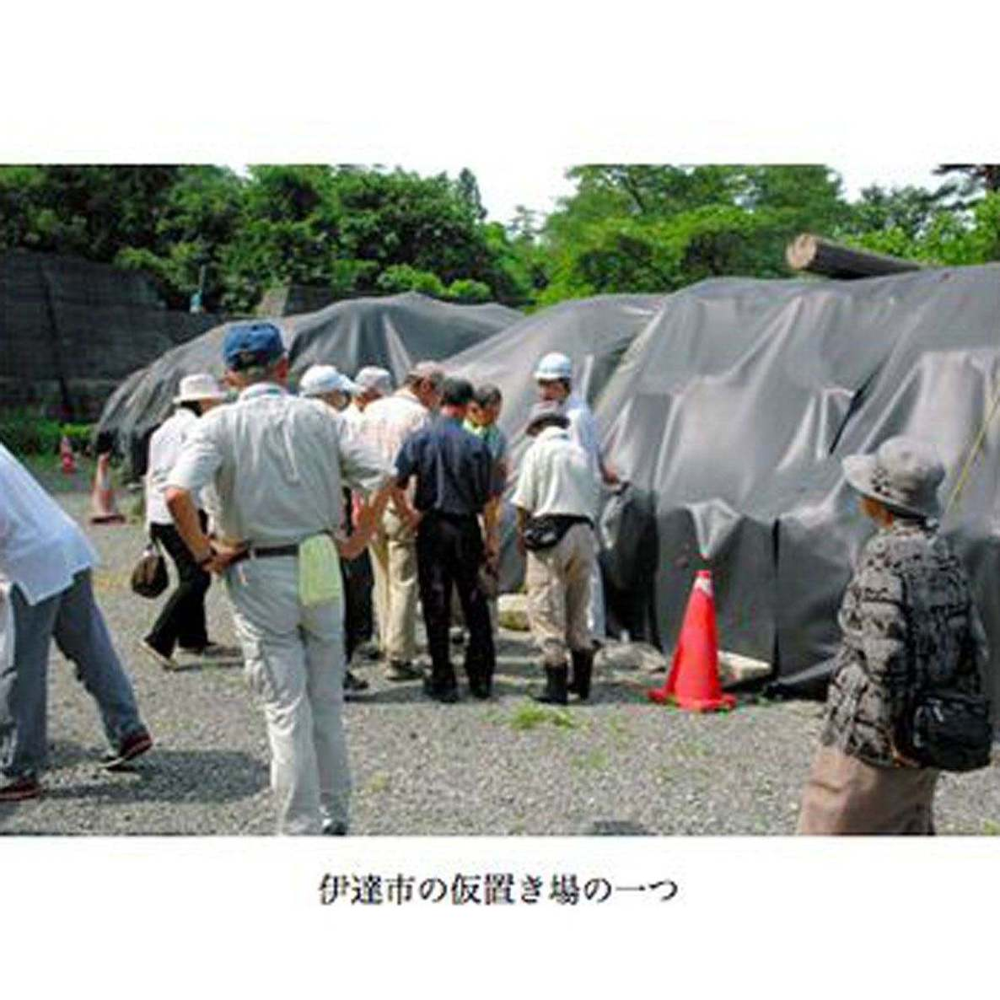
国が直接除染するのは住民が強制的に避難させられた地域。それ以外は国の費用で市町村が除染する。
飯舘村は全村避難中なので国が除染するのだが、１２年７月１３日にその国が「除染できない家」を宣告する事態が起きた。
前田地区の説明会の席上だった。前田は数年後をめどに帰還する居住制限区域で、国は「とりあえず年２０ミリシーベルト以下に」という除染目標を立てている。それが帰還に向けた第一歩なのだが......。
福島環境再生事務所の担当者が、突然「除染できない建物がある」といいだした。除染できないのは、作業をすると倒壊の恐れがある家。土壁で放射性物質が落ちにくい家。ひび割れにこびりついた家。
母屋が除染できないのなら帰れないではないか、と住民は怒った。
区長の長谷川健一（はせがわけんいち）（５９）は、実は以前から「除染不能な家と可能な家があれば地区が割れてしまう。壊してでも徹底的にやってくれ」と再生事務所に訴えていた。その答えが、説明会の「除染できない」だった。
住民の怒りで、次の説明会の日程は白紙となった。
除染で家屋をどこまで傷めていいか、それについて、法律や国のガイドラインには明記されていない。一方で、「財物を傷つけないで除染する」を基本ルールに、各市町村ごとの除染実施計画をつくっている。
これまでも市町村から「コンクリート部分を撤去しないと線量が下がらないが、それは認められるのか」などの問い合わせがでていた。状況に応じて判断してきたが、建物を解体してまで除染する例はなかった。
その後、前田の各世帯に除染方法を示した資料が届いた。家の写真の横に「除染作業困難」と書かれた建物があった。住民はまた怒った。
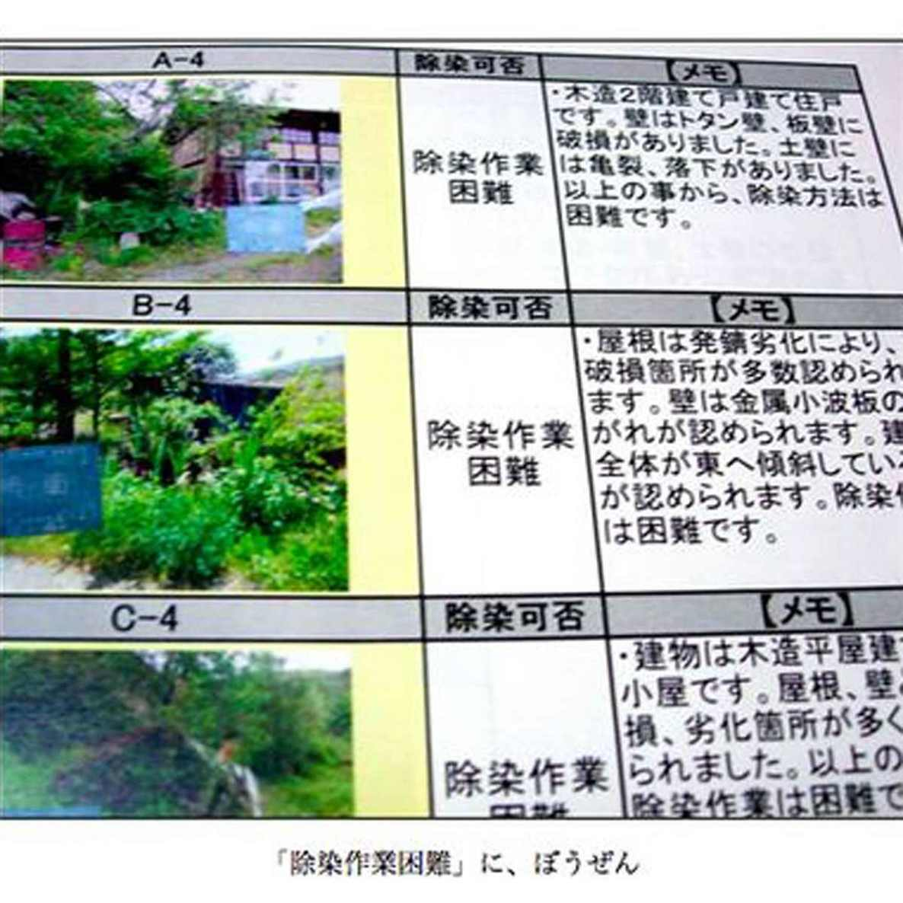
１２年７月１９日、飯舘村の村議会議長名で民主党副幹事長の大島九州男（おおしまくすお）にファクスが送られた。除染に関する要望を連ねた中に、この一項が入っていた。「老朽家屋の解体除染を、国の責任でする」こと。
直後、副幹事長の大島は１週間のうちに２度やってきて区長らから意見を聞いた。
１２年８月３日、国は「線量を下げるために解体するしかない場合は所有者の判断で解体可とする」との方針を伝えてきた。その費用は東電の賠償で弁償する。
中断していた地区での説明会が再開した。３週間あまりの空白が、やっと埋まった。
理髪業、木村慎太郎（きむらしんたろう）（４８）の自宅は浪江町で、原発から１０キロ圏内のところにあった。今は二本松市の仮設住宅に住んでいる。
本業再開のめどがたたない中、１２年２月から除染の作業員として働き始めた。
今は二本松市の建設会社に雇われて、市内のホットスポットの地区で民家の除染をしている。
屋根を洗ったり、庭の土をはいだり。暑いさなか、大粒の汗がしたたる。この夏、体重が６３キロから５８キロに一気に落ちた。
空間線量が毎時２マイクロシーベルトある家では、除染して０・８マイクロや０・６まで下がる。
「下がるのは下がるけれど、３分の２どまり。３分の１は残る。１回の除染では元には戻らないね」
浪江の自宅は、町内では比較的線量が低い地域だが、それでも毎時６～７マイクロあった。除染で３分の１に下がるとしても、とても帰れない。もっと高い地区ではなおさらだ。
「除染というのは、お年寄りなど帰りたい人のためにあるんだ。帰らないと決めた人や、将来のある若い人は別に考えないと。そういう人たちには他の解決法があると思う。賠償とか......」
浪江町長の馬場有（ばばたもつ）（６３）は１１年夏、福島県庁にあった国の原子力災害現地対策本部に乗り込んだ。本部長の田嶋要に「いつになったら除染を始めるんだ」「そもそも除染は本当に効果があるのか」と詰め寄った。
田嶋は「色々なやり方があって、どうするのか環境省でまとまるのに時間がかかっています」と答えるだけだった。
馬場はいう。
「除染で失敗しても、線量が上がるわけではない。方法を机の上で検討する時間があったら、現場で早く色々試してもらいたい。でないと、帰還が遅れるだけだ」
戻るのをあきらめた人もいる。しかし町長としては、町をあきらめるわけにはいかない。除染で住めるようになるなら、早くそうしてほしい。ところが本格的な除染はいまだめどが立っていない。
馬場のもとには、事故直後、研究者やＮＰＯから、除染についてさまざまな提案があった。
「セシウムがとれる薬剤がある」
「ゼオライトに吸着させればいい」――
国は恥を捨て、どんな方法でも試してほしい。馬場は切実にそう願っている。
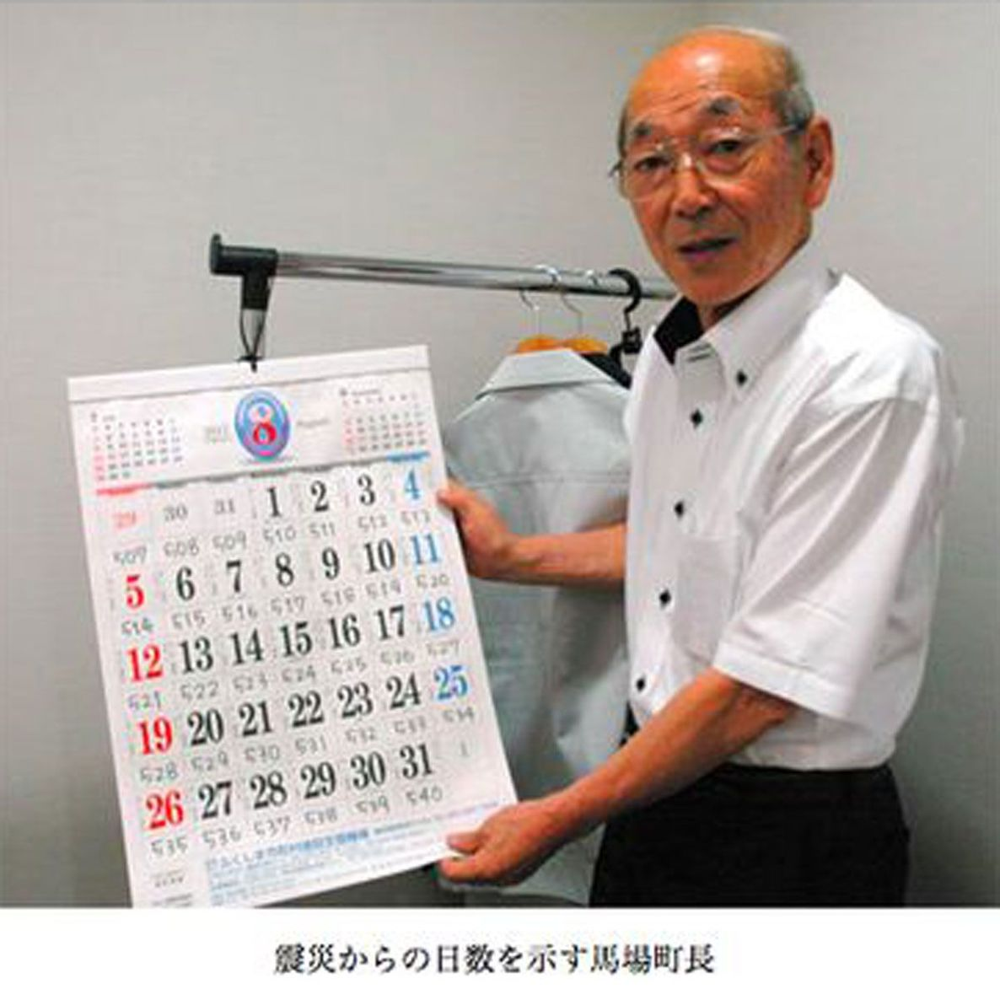
除染に関する環境省の予算は、今年度当初までで５７００億円。だが、除染の本番はまだこれから。東日本全体で最終的にいくらかかるのか、想像もつかない状態だ。
ところが除染といっても放射性物質を放射線が出ないように変えることはできない。集めて袋に入れて、離れた場所に保管するだけだ。これでは袋が増えるばかり。本質的な解決にはなっていない。
東京で土壌改良団体の顧問をしている山田恵規（やすのり）（６７）は、一つの案を持っている。
まず、放射性物質を含んだ土を高分子ポリマーで粒状にコーティングしてしまう。粒の大きさは０・０７５～３０ミリ。コーティングさえしてしまえば放射性物質が漏れることはない。そのことは１１年７月に検査機関で実験した。排水のセシウムは検出限界値以下だった。
山田案の特徴は、そのポリマー加工土を津波被害地域のインフラ工事に使うことだ。例えば県道ならアスファルトを１０センチ、砂利などの路盤材を２０センチ敷く。そのさらに下にポリマー加工土を敷く。
日本原子力研究開発機構は、放射線は土を３０センチかぶせれば９８％減少するとしている。それにもとづいて、福島県内の小中学校ではグラウンドに汚染土を埋める手法が多く採られた。遮水シートを敷いた穴に汚染土を埋め、３０センチ以上、土をかぶせるやり方だ。
埋めたら放射線はほとんど地上に届かない。ポリマー加工すれば地下水に漏れ出すこともないので、要するに封じ込めができる。
被災地では、防波堤づくりや地面のかさ上げで大量に土が必要になっている。復興のために使えば、仮置き場の造成の無駄も省けるし、置き場がなくて各戸で保管している状況も解消される――という理屈。
国の工程表では、除染で出た汚染土を２年半後に中間貯蔵施設に移すことになっている。しかし貯蔵施設の場所すら決まっていない。
除染で出た汚染土は、ひとまず市町村の仮置き場に置かれている。除染が進めば進むほど、仮置き場の汚染土の山が大きくなっていく。そんな現実に、「一度受け入れたら置きっぱなしになるのではないか」と不信を募らせる人々もいる。
山田案はいわば発想の転換だが、若干の実績もある。放射性物質を含んだ浄水場の土の処理に困っていた神奈川県の水道企業団が２０１１年、山田の技術を採用した。
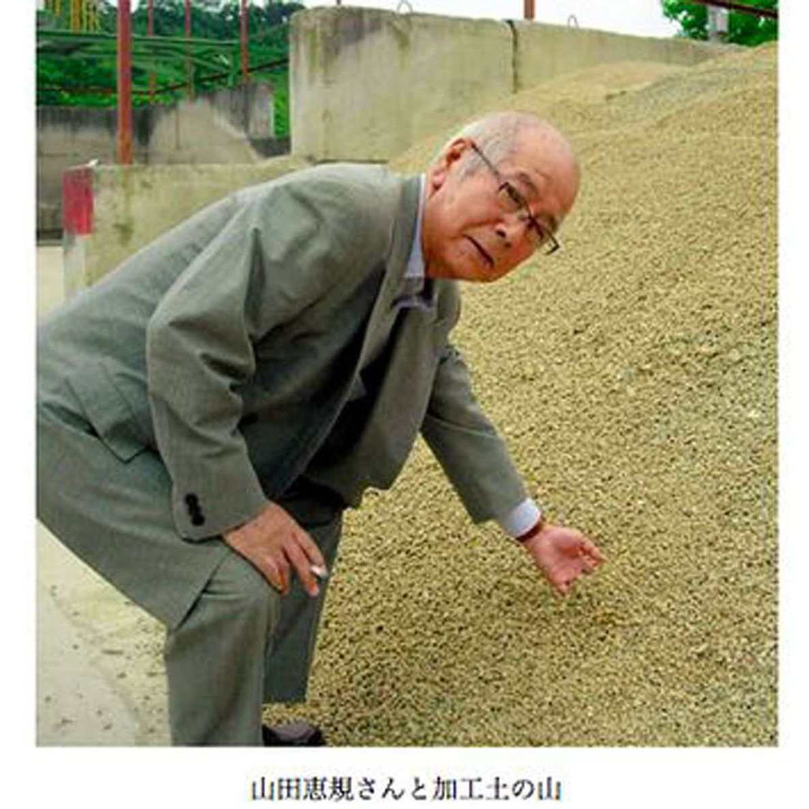
神奈川県の広域水道企業団では１１年５月２日、浄水場で川の水を濾過（ろか）した際に発生する土から、１キロあたり１４５５ベクレルという量のセシウムを検出した。
原発事故後、大気に乗って飛散したセシウムが山や野原に降り、それが雨で川に流され、浄水場に集まったのだ。
これまで、濾過で出る土の一部は、農・園芸土として１トンあたり１００円で業者におろしていた。だが、セシウムが含まれている場合はどうすればいいか。国の基準はなかった。
１年間で土は２万トン出る。当時浄水計画課の課長補佐だった小池健一（こいけけんいち）（４６）は頭を悩ませた。国にかけ合おうとしたが、監督官庁が分からない。保安院に聞き、厚生労働省だといわれ、らちがあかなかった。
国は１１年６月１６日付でやっと基準をつくった。浄水場の発生土や下水汚泥は、セシウムが１キロあたり８千ベクレル以下なら農地・宅地以外に埋め立て処分でき、１００ベクレル以下は建材に再利用してよい、というものだ。
だが、基準にパスしていても、そんなものを受け入れる業者はなかなか見つからない。
困った小池は、かつて土を引き取ってもらったことがある山田恵規らに相談した。山田は「セシウムを封じ込め、建設用の土として使う技術があります」。
１１年９月に山田と契約し、４４００トンをポリマー処理してもらった。
１キロあたり１００ベクレル以下になるようにきれいな土を足して希釈してもらったので、その土の代金も含め、１トンをおよそ８千円で引き取ってもらった。原発事故前は売れた土なのに、大損だ。
昨年度は台風の影響で、いつもより出る土の量が多く、３万トンにもなった。通常なら週に２～３回、外に搬出するが、台風のときは毎日作業が必要なほどだった。小池はいう。
「浄水場の敷地は限られ、処理できなければ土を詰めた袋でいっぱいになっていた。山田さんのポリマー処理のおかげで、本当に助かった」
浄水場発生土や下水汚泥の処理に悩む自治体はいくつもある。実際、山田の会社と契約した自治体は、ほかに四つある。
このやり方を利用すれば、除染で最大のネックになっている保管場所問題に道が開ける。そのためには国の実証試験に参加しなければ、と山田は思った。だが、そこにはハードルがあった。
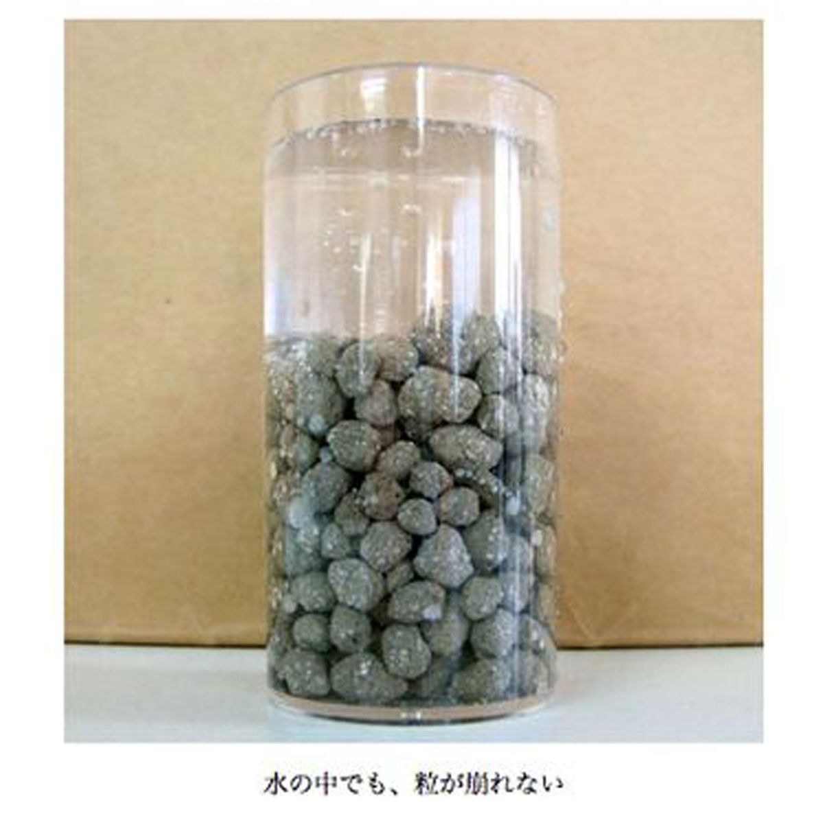
汚染土をポリマー処理して土木工事の基礎材に使う。そうすれば中間貯蔵も最終処分施設もいらない。土壌改良団体顧問の山田恵規は、これを除染に生かそうと考えた。
１１年末から１２年２月にかけ、環境省は除染技術の実証試験を募集していた。除染技術や除染で出た汚染土を減らす技術、除染時の排水を回収する技術が求められていた。パスすると２千万円までの実験費用が支払われる。山田はそれに応募した。
しかし、落選だった。
２９５件の応募があり、２２件が選ばれていた。がれきやコンクリート壁の除染技術や、除染で出た汚染廃棄物の量を減らす実験が並んだ。
知人を通じて落選の理由を聞いてもらった。山田の案は「再利用の技術であり、除染の技術ではないから」ということだった。
山田は大学を出たあと関電工に入社した。工事の現場で、大学出たての若い自分が、下請けの労働者に指図するのに疑問を感じた。
独立し、２７歳で建設会社を作った。会社には、北海道からの出稼ぎが多かった。雨が降ると、基礎に使う土がどろどろになって仕事にならない。工事は休み。これでは労働者の帰省の予定も立たない。
雨でも仕事ができるようにと開発したのが、ポリマー処理の粒状改良土だ。これは産廃処理にぴったりだった。土を１トン改良するのに、材料は、生石灰１千円と高分子８００円ですむ。それを、廃棄物として最終処分場に運び込むとなると２万円、ものによると１０万円かかる。
山田の技術は、有害物質が水に溶け出さない技術として評価を受け、技術認証された。
福島の除染の報道で、当初から保管場所がネックになると山田は考えた。除染はいわば、産業廃棄物の処理と同じ問題だと感じたからだ。
仮置き場がみつからないという報道を見るたび、落ち着かない気持ちになった。土をはぐといった土木工事の技術だけでなく、産廃処理の知識を生かさないと――。
濃度が高く、大量にある福島県の汚染土にも有効かどうかは分からない。しかし、試してみる価値はあるはずだ。なにより保管場所問題に解決の見通しはないじゃないか。
山田は１２年８月末締め切りの２回目の募集に再び応募した。前回は除染に直接関係する項目で応募したが、今回は「除染の支援に関する技術」にした。書類には「保管場所の問題を解決する」と書いた。
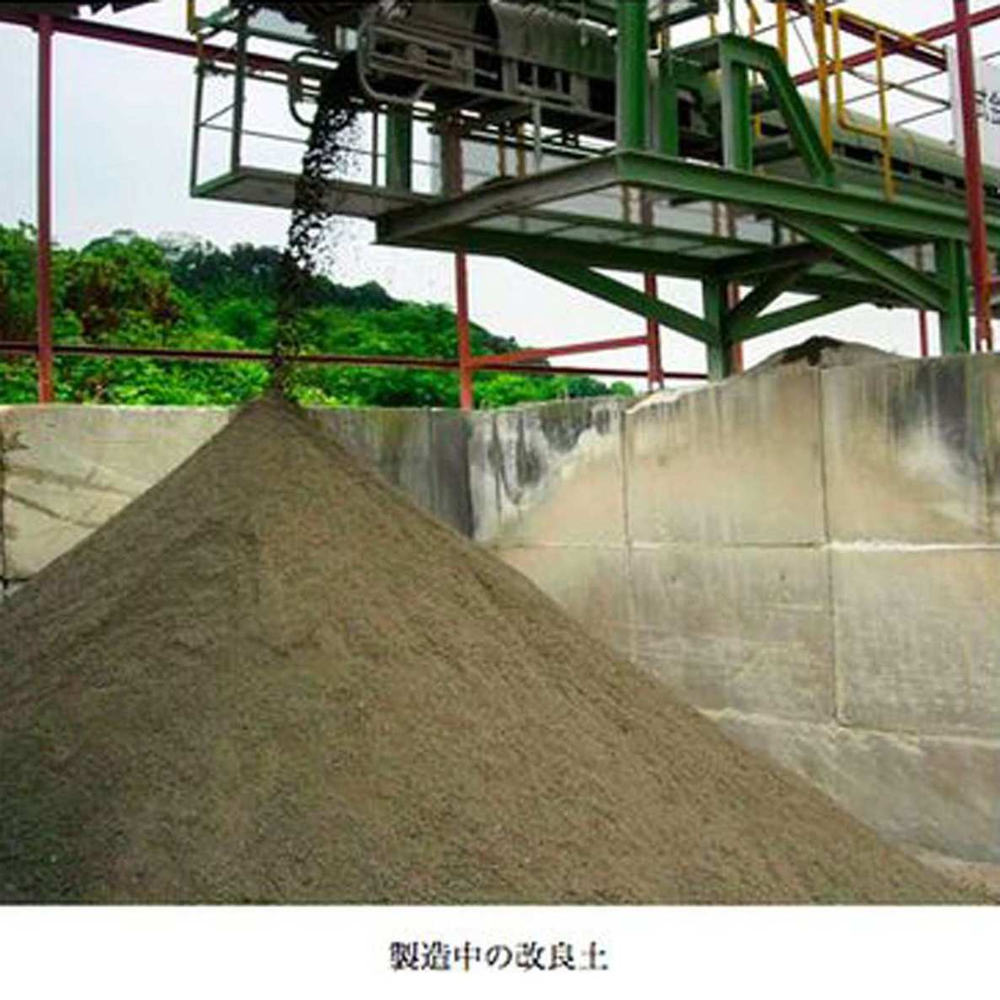
福島市で１２年８月１日、政府主催の公聴会が開かれた。エネルギー政策についての意見聴取会だ。
伊達市の主婦、羽賀ますみ（５７）が壇上にいた。
除染して安全になったとしても終わりではない。除染作業で損なわれる環境はどうなるのか。
被曝（ひばく）してしまった自分たちの健康はどうやって守るのか。
抱え続けてきた思いを、５分間、懸命に訴えた。
羽賀は埼玉県から移住して２５年になる。福島の自然が気に入り、家族で引っ越した。ログハウスを建て、畑で無農薬野菜をつくり、ニワトリを飼い、２人の子どもを育てた。
そこが今、伊達市でも線量が高い地域の一つとなっている。
放射能を恐れ、家に閉じこもりがちになった１年４カ月だった。丹精込めた畑は汚染され、除染するとしたら表土ははぎ取るしかない。
除染には汚染土の仮置き場が必要だ。「早く自分たちで見つけなければ」とせかされるようで、追い詰められた感じになる。
除染が終わればすべて終わりにされ、事故の責任も、将来の生活の安全も、なし崩しに風化してしまうのではないか。
裏山で栗を拾い、ホタルを見ながら散歩した穏やかな日々。「除染したって、暮らしが元通りにはならないのです」と羽賀はいう。
２０１１年、伊達市では市職員の半沢隆宏が１人で除染と取り組み始めた。１１年１０月に放射能対策課ができ、１２年４月からは１１人の態勢になった。
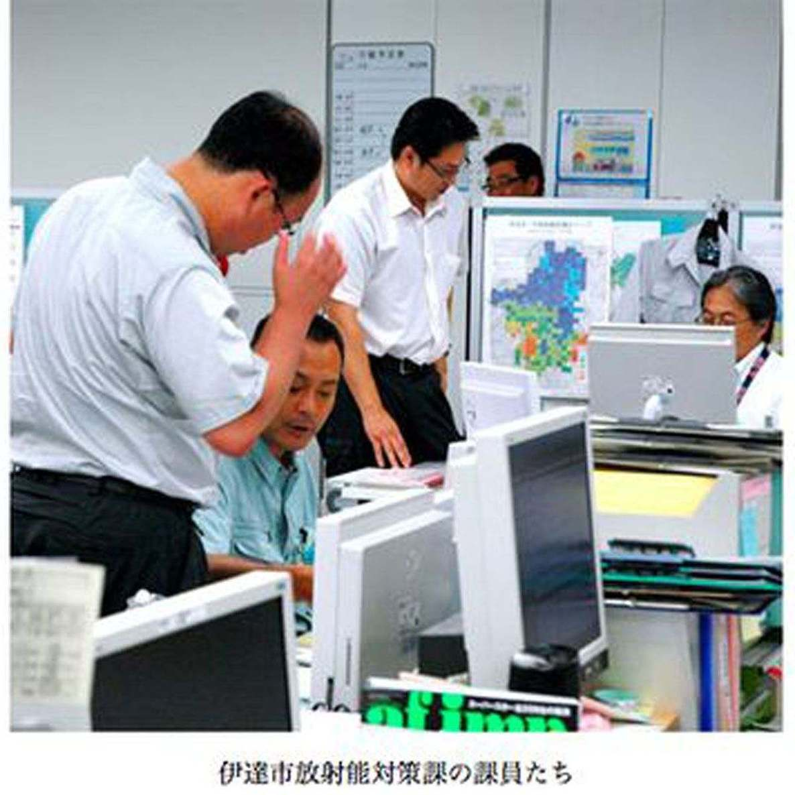
これからも住んでいかなければならない故郷を少しでも安全にしたい。結果を出し、他の市町村に住む人たちの役にも立ちたい。そう思って働いている、と半沢はいう。
半沢は、羽賀たちの胸にわだかまる数々の疑問がよく分かる。
東京電力が引き起こしたことなのに、なぜ自分たちで除染しなければならないのか。すればするほど費用は膨大になり、税金が使われて、将来に負担を残すことになるかもしれない。しかも、除染しても放射能を１００％取り除けるわけではない――。
だが、放射能はそこにある。まず身の回りを改善するしかない、と思う。
説明会で半沢が使ったライオンのフィギュアは出番がなくなった。実際の除染が、すでに２５００世帯で始まっている。
プロメテウスの罠〔１５〕 除染の悩み「今、そこにある放射能！」
著 者 朝日新聞（山田佳奈）
発行所 朝日新聞社
〒１０４―８０１１ 東京都中央区築地５―３―２
http://www.asahi.com/
発売所 朝日新聞社デジタル本部
〒１０４―８０１１ 東京都中央区築地５―３―２
http://www.asahi.com
２０１２年９月２８日 ＷＥＢ新書版発行
２０１３年１１月３０日 ＥＰＵＢ版発行
©2012 The Asahi Shimbun Company
All rights reserved. No reproduction or republication without written permission.
ISBN 978-4-90712-564-6
〈ご注意〉本コンテンツは、購入者個人の閲覧目的のためのものです。私的範囲を越える利用・譲渡などは禁止します。
〈おことわり〉本コンテンツは２０１２年９月２８日に刊行されたＷＥＢ新書版を底本としました。ＥＰＵＢ版の刊行にともない、体裁や表記を直した場合があります。 企業、組織などの名称、人物の役職、肩書等はいずれも記事初出当時のものです。